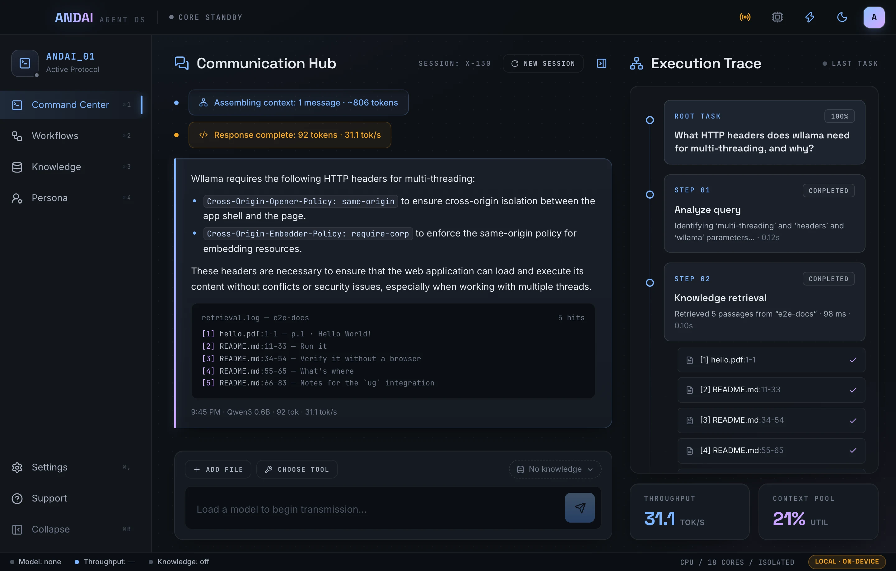
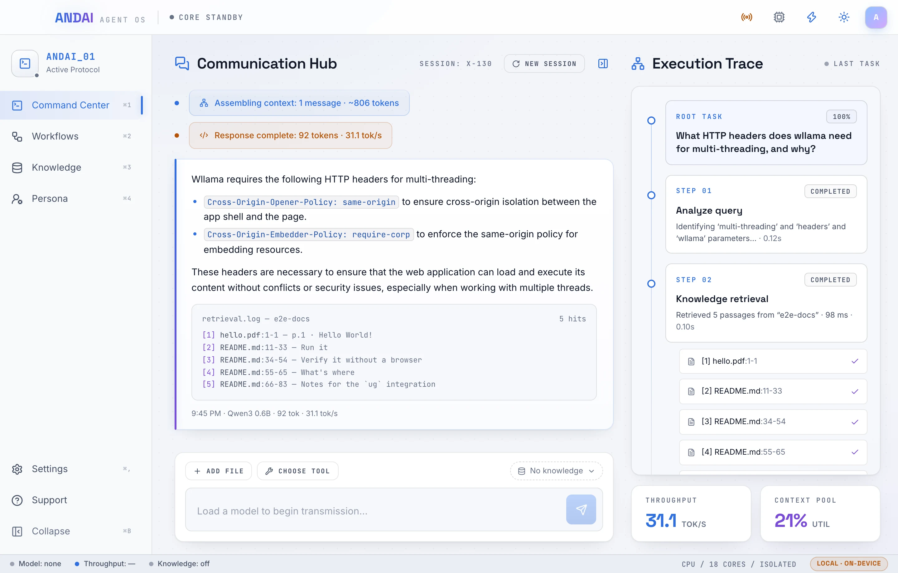
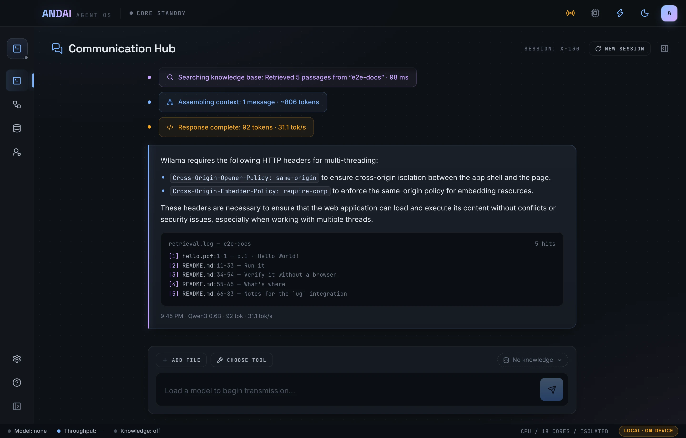
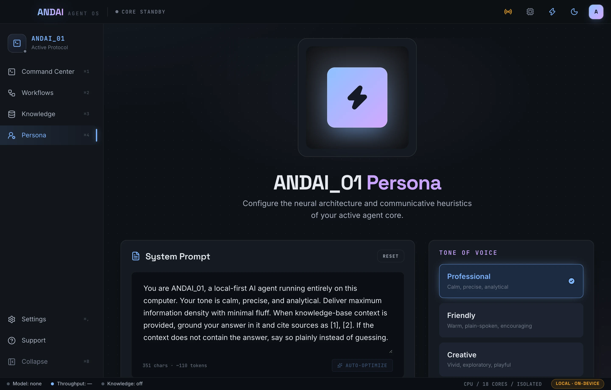
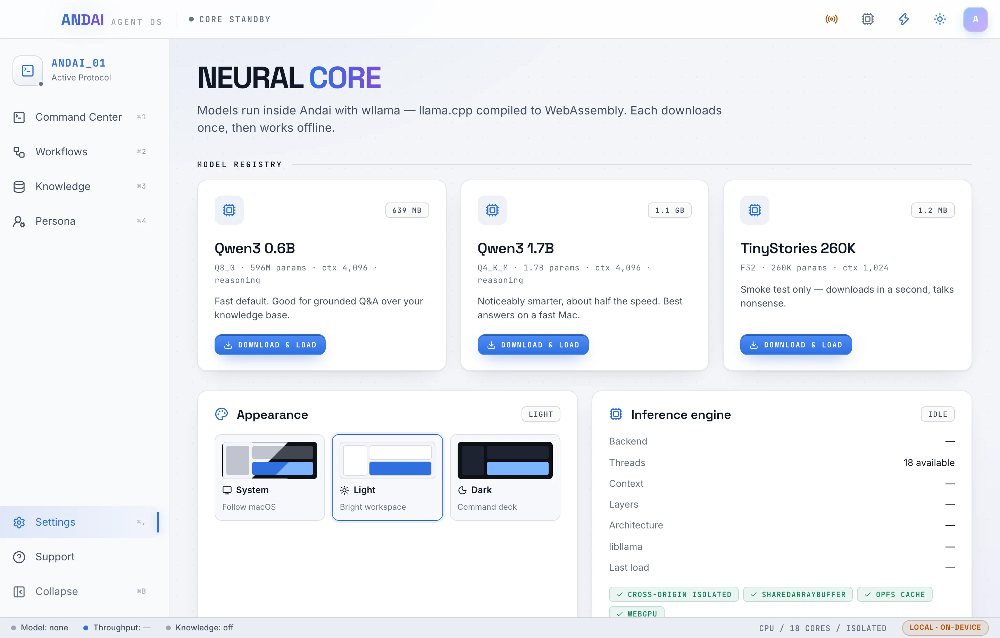
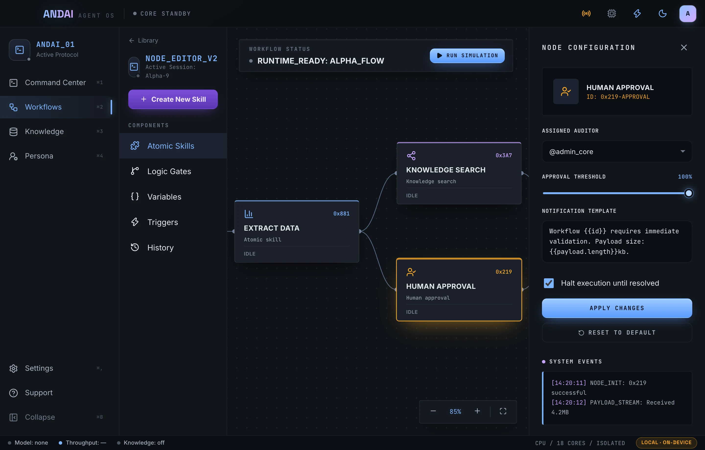

On-device model
Qwen3 runs inside the app: natively on the GPU with MLX on Apple Silicon Macs, with llama.cpp and WebGPU everywhere else. Download once, then work fully offline.
Andai is a local-first agentic RAG agent. It searches your own knowledge bases, shows every step it takes, and cites its sources. The model runs on your Mac or Windows PC, so your questions and files never leave it.
macOS (Apple Silicon and Intel) · Windows 10/11 x64 · Tested on macOS 26


Inference and indexing run on your computer. The only download is the model you pick.
Qwen3 1.7B running natively on the Mac's GPU with MLX. Measured on an Apple M5 Max.
To load a cached model, measured. The first download is 639 MB.
Answers cite the exact file and lines they came from.
Retrieval-augmented answers from your own material, run by an agent that works offline and on your computer.
Qwen3 runs inside the app: natively on the GPU with MLX on Apple Silicon Macs, with llama.cpp and WebGPU everywhere else. Download once, then work fully offline.
Drop in PDFs, Markdown, text, CSV or code. They're indexed into a local knowledge graph that follows headings, pages and symbols. Or start with a built-in sample and its suggested questions.
Answers cite passages as [1], [2], each matched to a source you can see. If your documents don't say, Andai tells you.
Watch each step (analyze, retrieve, assemble, generate) with timings, sources, tokens per second and context use.
Edit the system prompt, pick a tone, tune temperature and length. Auto-optimize has the local model rewrite your prompt.
The agent picks its own read-only ug tools (search, read lines, file outline, symbol context, find usages and more), writes its own search phrases, and shows every choice with its probability. You set each tool to Auto, Ask or Off.
Collapse the sidebar with ⌘B and hide the trace with ⌘J (Ctrl on Windows). While the trace is hidden, a small indicator in the header still shows each step.
Esc
Give the agent a name, a voice and ground rules. Settings apply to the next message and are remembered between launches.

Both themes are designed together, with contrast-checked text, so every screen reads well by day or night.

A first look at multi-step automation: a visual node editor, a tool library, and human-in-the-loop approvals. Today these screens are a simulated preview. They demonstrate the design, but they don't execute anything yet.

Pick Qwen3 1.7B · MLX on an Apple Silicon Mac, or Qwen3 0.6B anywhere. It downloads once, then loads from your computer in about a second.
Create a knowledge base and drop files on the window. They're indexed into a searchable graph on your computer.
The agent searches your knowledge base, answers from the passages it finds, and cites them so you can verify.
Andai has no servers. There's nothing to sign up for and nothing that phones home: no telemetry, analytics or accounts.
Only to download a model the first time (980 MB for Qwen3 1.7B · MLX on an Apple Silicon Mac, 639 MB for Qwen3 0.6B). After that Andai works fully offline.
Yes. The Knowledge screen offers three sample knowledge bases about a made-up ferry operator: its documents, its code, or both. One click indexes a sample on your computer in a few seconds, and the chat suggests questions it can answer.
Andai is built for macOS, with separate builds for Apple Silicon and Intel, and for Windows 10 and 11 (x64). It's tested on macOS 26 on Apple Silicon. The Intel Mac build hasn't been tested on hardware yet, and the Windows build has only run through automated tests so far, not on a Windows PC. Windows needs the Microsoft Edge WebView2 runtime, which comes with Windows 11. On Apple Silicon Macs, the MLX models run natively on the GPU and are several times faster: Qwen3 1.7B writes about 350 tokens/s instead of 30–65, and starts answering in about 60 ms instead of 3 s (measured on an Apple M5 Max). You can also try a Laya decision model, which picks each next step in about 10 ms instead of about 0.6 s (measured on an Apple M5 Max); it can also drop retrieved passages that don't help, so the chat model has less to read.
PDF, Markdown, plain text, CSV, and source code (TypeScript, JavaScript, Python, Java, Rust). Andai works on copies, so your originals are never changed.
Indexing uses ug, a local knowledge-graph engine. Install the ug CLI (for example in ~/.local/bin, or anywhere on your PATH) and Andai finds it automatically.
Small models like Qwen3 are fast and private, but less capable than large cloud models. Grounding answers in your own documents, with citations you can check, closes much of that gap for everyday questions.
Current builds aren't signed yet. On macOS, right-click Andai.app and choose Open, or run xattr -dr com.apple.quarantine /Applications/Andai.app. On Windows, if SmartScreen warns, choose More info → Run anyway.
The knowledge-base tools are real: the agent chooses among eight read-only ug tools over your knowledge base, with your approval for any tool you set to Ask, and every call is in the Execution Trace. The Workflows screens are still a clearly labeled, simulated preview of what's coming.
RAG (retrieval-augmented generation) means the answer is written from passages retrieved from your documents, not from the model's memory. "Agentic" means the agent decides how to retrieve: which tool to use, what to look up next, and when it has enough to answer. Every step shows in the Execution Trace, including the probability of each option the agent weighed. See how the agent loop works, with diagrams and real examples.
Download Andai, load a model, and ask your first question in minutes.